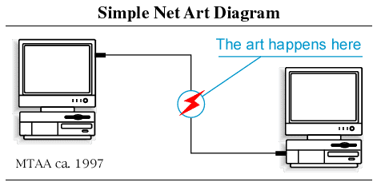

Course Description
Though the web was originally conceived as an online space for sharing hyperlinked documents, the modern Web browser has evolved into a creative coding playground capable of producing all manner of networked art and algorithmic compositions. In this course we'll learn JavaScript, the Web's defacto programming language. Throughout the quarter we'll experiment with various different Web APIs for creating generative and interactive Internet art including HTML5 video, Canvas (2D/3D animations) and Web Audio. We'll learn how to produce work that responds to various input sources (trackpad/mouse, touchscreen, keyboard, cameras, microphones) and how to fetch and incorporate data from external APIs elsewhere on the Internet.

Lessons
Prologue: What's Internet Art?
In theory, this course is meant to follow the MAAD 23631 intro course, Internet Art I. In practice you may not have taken that course, as it's not technically a prerequisite. That said, there are certain histories, references, ideas/concepts and coding languages covered in that course which are necessary to understand before diving into the material covered in this course. If you did not take the intro course, feel free to poke around and explore as much of the material on the Internet Art I website as you'd like. In the interest of time I've put together some material meant to function as a "Crash Course" for those who did not take the intro course.
Act I: Versioning
A new media object is not something fixed once and for all, but something that can exist in different, potentially infinite versions.
Lev Manovich
We'll be submitting all of our assignments through a platform called GitHub this quarter, but before we dive into git (a command line tool for versioning software projects) and GitHub (an online platform for collaborative "open source" coding built on the git command line tool) we should learn a bit about it's history as well as some related new media art theory. Read the notes I put together on the Free/Libre and Open Source Software (FLOSS) movements and watch the videos in the corresponding playlist. Then watch my tutorial series on Versioning, where I'll cover some new media art theory before diving into a series of git/GitHub tutorials (which will also cover a bit of Internet culture/history). At the end of that series I'll introduce the first assignment: Code Poetry.
Act II: Randomness
There is this old romantic idea which is called "intuition". An artist has talent, a genius, sits down, has a drink and creates. And intuition does what it does, sometimes it creates something good, sometimes not. Now, when we work with computers we're modern and say intuition is old fashioned, I'm not interested. But there is a thing that can replace intuition. It's randomness.
Vera Molnár
In this next section we'll learn how to program by learning to code in the Web's defacto programming language: JavaScript. I'll be introducing all the core concepts in programming through the lens of art, and more specifically, in this set of tutorials, through the lens of "randomness" or "chance". At your own pace, work through the material I've put together in the Intro to Programming notes. Towards the end of those notes I'll introduce the second class assignment: 10 print. You can access the full playlist of lectures/tutorials covered in those notes on here.
Act III: Algorithmic Composition
Again, it [the Analytical Engine] might act upon other things besides number, were objects found whose mutual fundamental relations could be expressed by those of the abstract science of operations, and which should be also susceptible of adaptations to the action of the operating notation and mechanism of the engine . . . Supposing, for instance, that the fundamental relations of pitched sounds in the science of harmony and of musical composition were susceptible of such expression and adaptations, the engine might compose elaborate and scientific pieces of music of any degree of complexity or extent.
Ada Lovelace
In the last assignment we learned that there are functions in JavaScript that can be used to create compositions that appear differently each time we run our code, despite the code itself remaining the same. This is what's referred to as "generative art" or "algorithmic compositions", works of art where the aesthetic details result partly from the creative decisions of the artist/coder and in part by "decisions" made by the computer. Does this mean the computer is less of a tool or more of a collaborator? Can computers be creative? In these next tutorials we'll be exploring the relationship between art and algorithms, artists and computers, in a bit more depth.
Start by watching the videos and reviewing the notes on Form+Code where we'll learn how to produce algorithmic visual compositions using a library called p5.js (built on the Web browser's Canvas API) as well as cover some of the history behind these sorts of practices. Then move onto the videos and interactive notes for the Web Audio API, where we'll explore algorithmic musical compositions and discuss the very nature of creativity. This section contains two assignments, the first accompanies the lesson on Form+Code and the second on Alogrithmic Music.
The idea becomes a machine that makes the art
Sol Lewitt
Epilogue: Artware
The material covered in the previous sections will likely take the duration of the entire quarter for many of us to complete. Some of us, however, might be entering this course with a bit more experience and prior programming knowledge and thus may have worked through these lessons and assignments at a faster pace. For these students I've put together a few more lessons related to "Artware" (or Software Art). Generally speaking, software applications (aka programs or apps) are traditionally designed to serve a functional or utilitarian purpose, where as artware is created to serve a more creative (or critical, social, and/or experimental) purpose. In these set of tutorials I'll cover a number of different APIs, staring with the DOM API and then the Fetch API, which are used to create Web apps (or browser based applications). I'll then introduce a few JavaScript libraries, first express.js and then sockets.io, for creating the "back end" (or server side) components of a Web app, before teasing a bit of the WebGL API (via the three.js library) for creating 3D graphics in the browser.